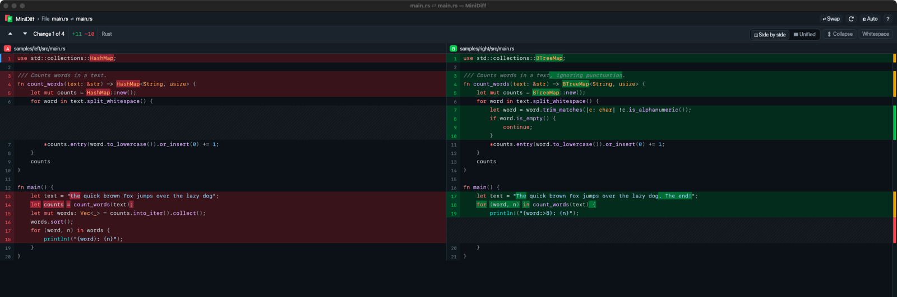
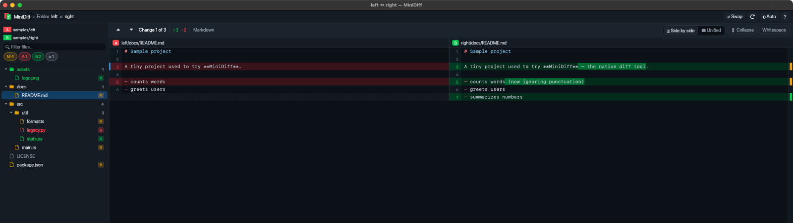
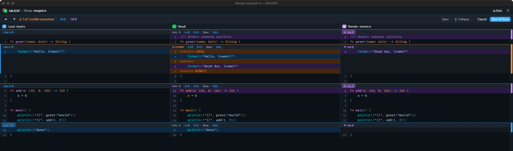

File diff
Side by side or unified, with tree-sitter syntax highlighting and word-level changes.

Folder diff
Drop two folders on the app icon. Browse what changed, was added or removed, then drill down into any file.

Merge conflicts
Three-way merge: non-conflicting changes merge automatically. For each conflict, pick A, B, both, the base, or edit the result by hand.

Drop to compare
Drop two files or folders on the window or the Dock icon, or run minidiff a b.
Works with Tower & git
Use it as the diff and merge tool. It exits successfully only when you saved the merge.
Keyboard first
n/p jump between changes; a/b resolve conflicts; ⌘S saves.
Set up
Unzip, move MiniDiff.app to Applications and open it once with right-click → Open. The app updates itself after that.
# ~/.gitconfig
[diff]
tool = minidiff
[difftool "minidiff"]
cmd = /Applications/MiniDiff.app/Contents/MacOS/minidiff \"$LOCAL\" \"$REMOTE\"
[merge]
tool = minidiff
[mergetool "minidiff"]
cmd = /Applications/MiniDiff.app/Contents/MacOS/minidiff --merge \"$LOCAL\" \"$REMOTE\" \"$BASE\" \"$MERGED\"
trustExitCode = trueFor Tower, see the setup in the README. MiniDiff focuses on text diffing and merging. Linux and Windows builds are available on request: open an issue if you'd like to beta-test.